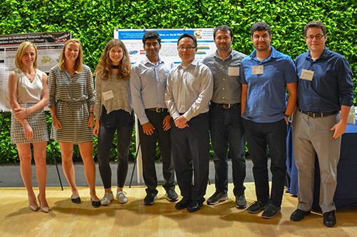

SBP-BRiMS 2023 Grand Interdisciplinary Data-Science and Modeling Challenge.
September 20-22, 2023, Hybrid. Gates Hillman Complex,
4902 Forbes Ave, Pittsburgh, PA 15213.
Participants may work individually or in teams.
Participants must define what key social or political issue being addressed.
Participants must use data generated by at least two large language generators.
Participants must address one of the three research questions listed below.
Participants should generate questions related to the social or political issue and should
employ one or more methodologies appropriate for the empirical assessment of or
forecasting on the basis of big data (e.g., computational algorithms, machine learning,
computer simulation, social network analysis, text mining).
Each participating team may prepare one or more entry.
Entries must represent original work that has not been previously published or submitted
to other challenges.
At the conference, all entries will be judged by the community using a participant voting
system.
The winning team of the challenge problem will be invited to write a whole paper to be
published in the Journal of Computational and Mathematical Organization Theory – in
the SBP-BRiMS2023 special issue.
A strong entry generally has one or more of these components:
Employ multiple data sets.
Be theory based.
Include at least one high quality visualization (note that participants will be allowed to display dynamic visualizations via some form of electronic media e.g., by hanging a tablet from the poster. However, please note that tables will not be provided.
Demonstrates a deep understanding of the problem being addressed.
The entry should generate a new empirical finding that challenges or provides novel
support for existing social or political theories or provides information of policy
relevance.
In addition, a strong entry should be well-written and provide some level of creativity in its use of or combination of data.
Overview
As chatbots and other large language generators become more sophisticated they are increasingly
being used to handle a wide variety of tasks and to develop knowledge products such as news
articles and creative arts. Society is striving to catch up with the implications of operationalizing
these AI tools and to understand the risks associated with computationally generated
information. In the domain of Cybersecurity, research questions arising from these advancements
include:
How does this technology contribute to political polarization? How is polarization
expressed in large language generators?
How does misinformation spread in chatbot knowledge production?
How are information and knowledge from language generators traced and attributed?
In this year’s SBP-BriMS2023 challenge problem, we ask participants to consider the issue of
polarized knowledge production
Choose one social or political issue, such as the cultural preferences of music (e.g., rap vs.
classical music); the adoption of initially politically neutral new technology, e.g., electric
vehicles, blockchain, or artificial intelligence tools; social issues, e.g., inequality and the pay gap,
vaccination, or sustainability; or political issues, e.g., elections or judicial ethics in the Supreme
Court. Once you pick an issue, choose a large language generator such as those recently
reviewed in https://writesonic.com/blog/chatgpt-alternatives/#socratic-by-google.
Develop two opposing sets of training questions for an English-speaking language generator and
ask the chatbots to develop two 3,000-word articles, one for each side of the issue (or create a
back-and-forth dialog that represents the polarized views). Analyze both the questions and the
responses returned by the language generator.
Submit analysis of the output from the chatbot viewpoints on the social or political issue, a)
show the semantic differences between the two sides and b) analyze how the two sets of training
questions led to different chatbot behaviors. It may be necessary to prime the language generator
to provide polarized information. How was this accomplished?
Submitting an Entry
What to Submit
You need to submit 2 things: a 2-pages extended abstract in conference format and a single
PowerPoint teaser slide - that we can use to promote your entry. All two of these will go in the
non-archival online proceedings.
Challenge Paper: A 2-pages extended abstract describing the project. This includes references
as well. This should define:
What are the questions asked?
What is the key policy issue or theory being addressed?
What is the key methodology or methodologies used?
What tools were used to analyze the data?
Any novel contributions or findings?
Who is the team? Provide names, emails, and institutions.
Promotion/teaser Slide:
This is a single PowerPoint slide. The purpose of this slide is to excite
people to come to your poster. This slide will also be put online. We will use this slide to
promote your entry. This slide should contain:
Title of project
Names of all team members
This slide may contain:
Any word or image or idea that you think will promote your poster
All entries will send at least one team member to SBP-BRiMS2023 who will be registered for the conference
by the early registration deadline to represent their entry.
How entries will be judged
Entries will be judged by community voting at the poster session.
Who is eligible
Anyone with an interest in large language models (LLM) to address a social or policy issue.
Entries are accepted from single individuals or teams.
Suggestion: Participants may want to use Jupyter to demonstrate their code and results. Examples can be found here, Sample Jupyter Notebooks.
Winning Entry
The winning team of the challenge problem will be invited to write a whole paper to be published in the Journal of Computational and Mathematical Organization Theory – in the SBP-BRiMS2023 special issue.

2018 Challenge Winners and Runners Up 2018 Disinformation Challenge Winner: "FakeNewsTracker: Towards Fake News Collection, Detection, and Visualization" by Kai Shu, Deepak Mahudeswaran and Huan Liu 2018 Opioids Challenge Winner: "Using Synthetic Populations to Understand Geospatial Patterns in Opioid Related Overdose and Predicted Opioid Misuse" by Savannah Bates, Vasiliy Leonenko, James Rineer and Georgiy Bobashev